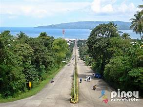
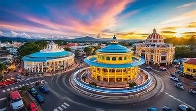
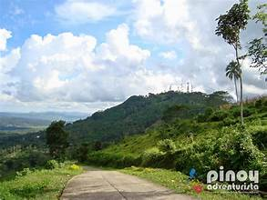
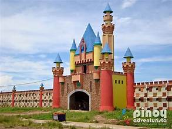
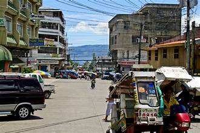
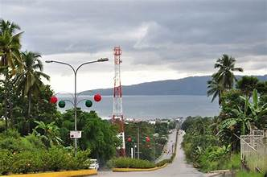

Pagadian City is the capital and largest city of Zamboanga del Sur. Situated along Pagadian Bay, it serves as the political, economic, and cultural hub of the province. The city is nicknamed "Little Hong Kong of the South" due to its hilly terrain and bustling harbor.
Pagadian began as a small fishing community and grew into a major trading center during the American colonial period. It was chartered as a city in 1969. The city's development was shaped by the influx of migrants from various Visayan and Luzon provinces.
The city is characterized by steep hills descending to the bay, giving it a dramatic topography. The downtown area lies along the waterfront, while residential and commercial developments extend up the hillsides. The city covers an area of approximately 333 square kilometers.
Pagadian is the commercial center of the province, hosting markets, shopping centers, banks, and government offices. Trade in agricultural products, particularly copra and corn, is central to the local economy. The port handles inter-island shipping and fishing activities.
The city is known for its motorized pedicabs that navigate its steep hills — a unique mode of transport not commonly seen elsewhere in the Philippines. The Pagadian Airport connects the city to major hubs like Cebu and Manila.
Notable attractions include Dao Dao Islands, White Beach, Tukuran Twin Falls, and the city's scenic bay views. The city also hosts cultural events and festivals that draw visitors from across the region.


